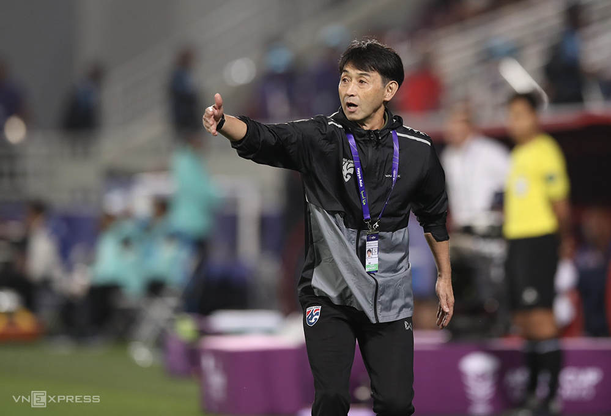

244 Thể thaoBóng đáCác giải khácThứ tư, 17/1/2024, 05:22 (GMT+7) Cầu thủ Thái Lan tiếc vì chỉ thắng hai bàn QATARNicholas Mickelson cho rằng nếu tận dụng cơ hội tốt, Thái Lan sẽ hạ Kyrgyzstan đậm hơn tỷ số 2-0 trong trận ra quân Asian Cup 2023. Thái LanKyrgyzstan Thứ ba, ngày 16/1/2024, 21:30 Asian Cup - Vòng 1 Kết thúc Thái Lan Thái Lan 2 - 0 Hiệp một: 1-0 Kyrgyzstan Kyrgyzstan icon-ball S. Jaided (26') icon-ball S. Jaided (49') Chi tiết trận đấu Supachai Chaided lập cú đúp, giúp Thái Lan đánh bại Kyrgyzstan 2-0 trong trận đấu trên sân Abdullah bin Khalifa. Đội bóng xứ chùa vàng trở thành đại diện duy nhất của Đông Nam Á chiến thắng ở lượt trận đầu Asian Cup 2023, sau khi Việt Nam thua Nhật Bản 2-4, Indonesia thua Iraq 1-3, còn Malaysia thảm bại 0-4 dưới tay Jordan. Thái Lan còn đứng đầu bảng F khi cùng có ba điểm như Saudi Arabia nhưng hơn về hiệu số bàn thắng bại (2-1), rộng cửa vào vòng 1/8. Tuy nhiên, hậu vệ Mickelson chưa thực sự hài lòng. Anh chia sẻ sau trận đấu: "Thái Lan đá tốt và xứng đáng có ba điểm. Nhưng đáng ra chúng tôi nên ghi nhiều bàn thắng hơn. Hôm nay, đội tạo ra nhiều cơ hội".

Mickelson (phải) tranh chấp với Abdurakhmanov khi Thái Lan hạ Kyrgyzstan 2-0 trên sân Abdullah bin Khalifa, Doha ngày 16/1. Ảnh: Lâm Thỏa
Trong khi đó, HLV Masatada Ishii tỏ ra hài lòng với chiến thắng trước Kyrgyzstan. Nhà cầm quân người Nhật Bản nói: "Trận ra quân bao giờ cũng khó khăn. Thái Lan giành ba điểm, và tôi cảm thấy rất tuyệt vời. Các cầu thủ hiểu nhau, chơi đúng chiến thuật và mang lại kết quả tốt". Khi một phóng viên Kyrgyzstan đề nghị Ishii đánh giá màn trình diễn của đối thủ, HLV Thái Lan từ chối vì chỉ muốn tập trung vào đội nhà. Rất nhiều phóng viên Nhật Bản tới theo dõi trận đấu giữa Thái Lan và Kyrgyzstan. Sau trận, họ hỏi nếu gặp nhau, Thái Lan của Ishii liệu có thể thắng được Nhật Bản hay không. HLV sinh năm 1967 trả lời: "Nhật Bản rất mạnh, và nếu gặp, chúng tôi sẽ cố gắng hết sức. Thái Lan sẽ cho mọi người thấy tại sao chúng tôi có mặt tại Asian Cup".
HLV Ishii chỉ đạo tuyển Thái Lan trong trận thắng Kyrgyzstan 2-0 trên sân Abdullah bin Khalifa, Doha ngày 16/1. Ảnh: Lâm Thỏa
HLV Ishii sinh năm 1967, thời còn thi đấu, từng cùng Kashima Antlers vô địch J-League 1996. Sau khi giải nghệ năm 1998, ông theo đuổi sự nghiệp huấn luyện nhưng phải đến năm 2015 mới giành danh hiệu đầu tiên là J-League Cup cùng Kashima Antlers. Một năm sau, đội bóng của ông giành cú đúp vô địch J-League 1 và Cup Hoàng đế, Á quân FIFA Club World Cup, nơi họ thua Real Madrid 2-4 sau 120 phút. Năm đó, Ishii nhận danh hiệu HLV xuất sắc J-League. Năm 2019, Ishii sang Thái Lan dẫn dắt Samut Prakan City rồi Buriram United giai đoạn 2021-2023. Ông giúp Buriram hai lần giành cú ăn ba gồm Thai League 1, Thai FA Cup, Thai League Cup mùa 2021-2022 và 2022-2023, qua đó nhận cú đúp danh hiệu HLV xuất sắc Thai League.